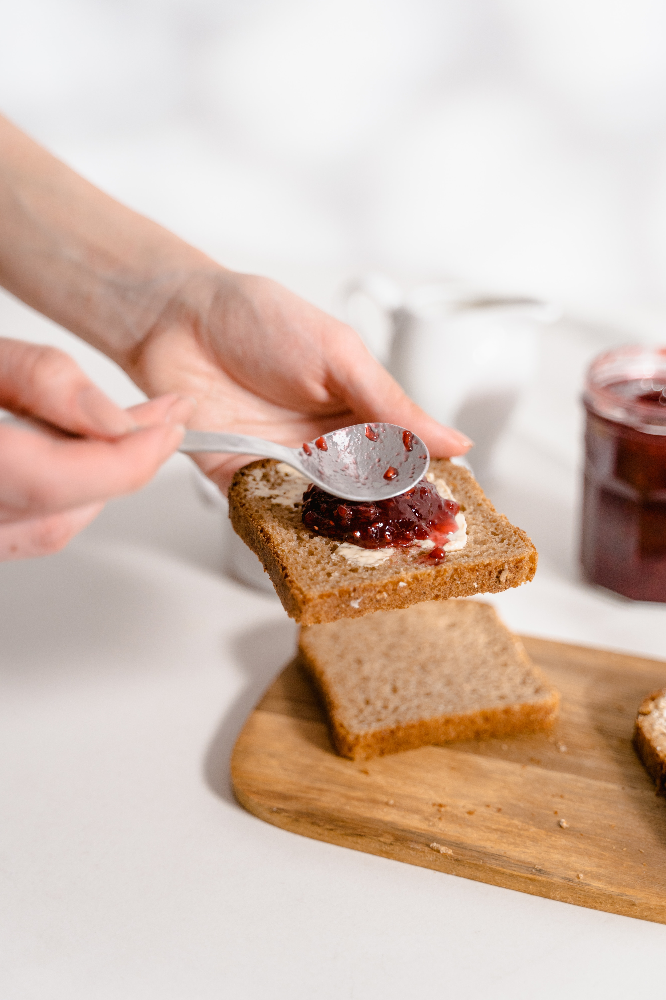

Guide to a great lunch break

See this article (opens in new tab)
Sure, everyone likes a Subway, but did you know how much sugar is in the 'bread'?
Placeholder Link
Follow these instructions to make a great sandwich
- Buy some lovely bread - I recommend sourdough!
- Cut yourself a couple of nice think slices
- Butter both, generously
- Add fillings, I would suggest bacon, brie and cranberry, but you do you!
- Salt & pepper. Always.
- Cut your sandwich in half, triangles - you're worth it.
Check-out these bands while you are eating!
- Radiohead
- Cinematic Orchestra
- Black Pumas
- The Smiths
- The Doors